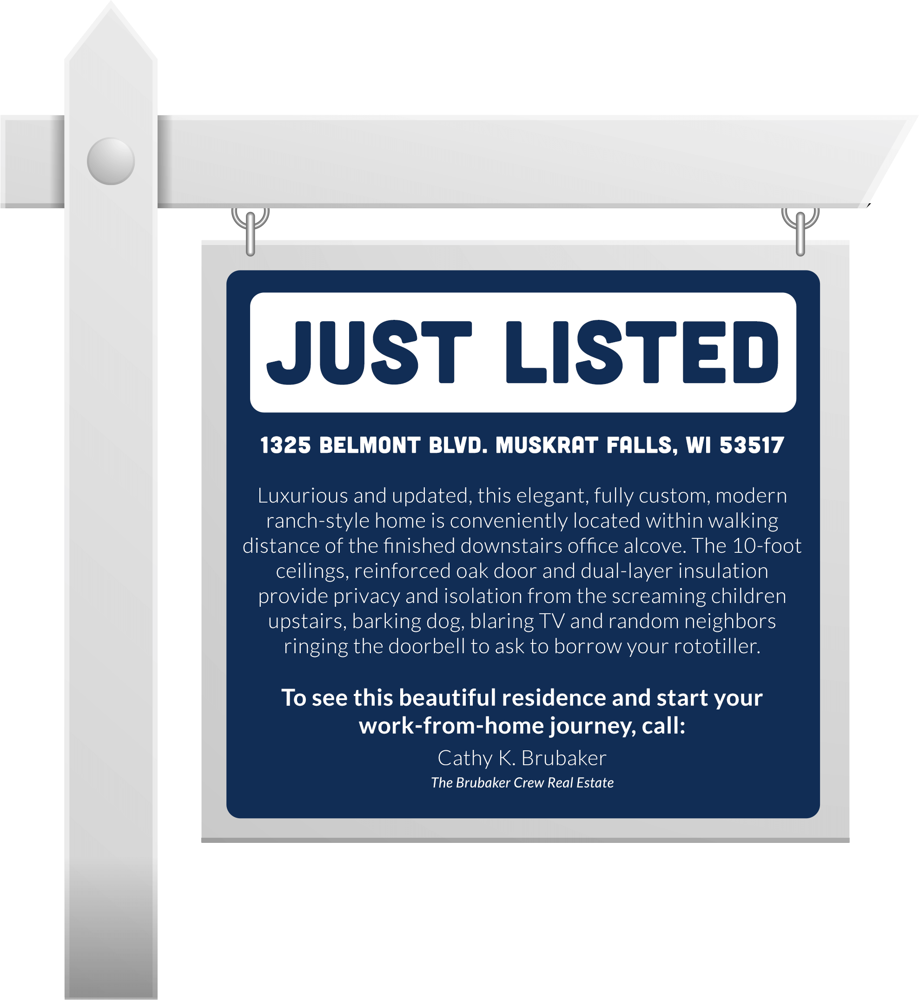
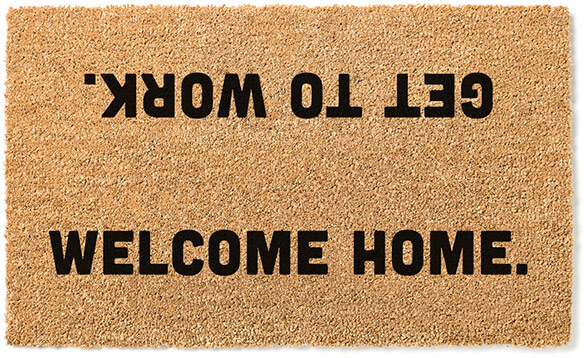
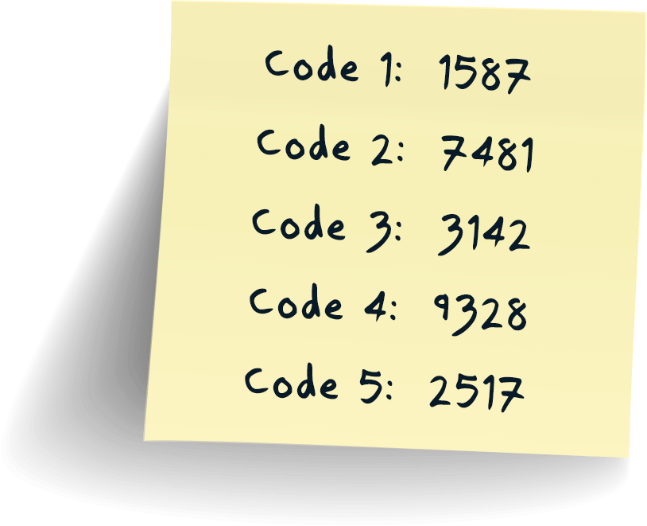

Part of the Working Remotely Training Series

Home is Where the 802.11ac is
So it’s come to this. Instead of going in to work at the office across town, it just makes more sense to perform your work role at home.
With advances in technology, working remotely has become a seamless alternative for many employees across multiple industries.
That’s not to say there aren’t concerns when your home becomes your home office. Your working style, communication channels, management and team dynamics will all be affected. Like animals that adapt to new environments by changing color or growing insulating fur, the human worker must also become accustomed to new working arrangements. It’s nature.
Remote working is becoming one of the most sought-after benefits an employer can offer. Employees have more control over their work environment. They can arrange their workspace to best accommodate their needs, with comfort and convenience in mind.
So, whether you rent or own, that place where you sleep, cook dinner, raise your family, binge your true crime shows and pursue your hobbies is now the same place where you manage your career.

Advantages of Working Remotely
When it comes to working remotely, there are many advantages for both employers and employees.
FOR EMPLOYERS
Expenses decrease:
Small business owners can save money on overhead expenses such as building rent, equipment, office furniture, equipment and supplies.
Productivity increases:
The workforce is happier without the burdens of wasted commute time, office politics and lack of privacy, which can negatively affect productivity and morale.
Turnover decreases:
Because remote work often boosts job satisfaction, employees stay with companies longer, saving employers the time and expense or training replacements.
Hiring pools expand:
Remote work can remove some of the barriers of the local talent pool by opening up to broader geographical possibilities.
FOR EMPLOYEES
No commute:
Traffic congestion, fuel costs, the risk of illness from public transportation and wear and tear on vehicles make the daily commute abhorrent to many workers.
Autonomy and flexibility increase:
When employees work from home, they often have more freedom to work how they want to. They enjoy the flexibility in how and when employees get work done.
Better health and safety:
Health concerns are the reason so many of us have converted to home offices. Remote workers avoid crowded public transportation and interacting with others and the threat of viruses.
Saves money:
Not having to buy lunch or breakfast out each day saves money, as well as transportation expenses.
Disadvantages of Working Remotely
On the flipside, it’s not all homemade breakfast and meetings in your pajamas for the remote workforce. Here are the setbacks that can befall both employers and their staff.
FOR EMPLOYERS
Collaboration is more difficult:
If a work team can’t meet face-to-face for impromptu conferences, it can be detrimental to innovation, productivity, problem solving and collaboration.
Team building is strained, if not nearly impossible:
Employees value the feeling of being part of a team. That feeling is difficult to experience when working remotely, and the lack of in-person interaction can damage morale and productivity.
The loss of some control:
Some business owners resist remote work environments because it means giving up some control, which can negatively affect some businesses.
FOR EMPLOYEES
It can be isolating:
For some, working from home can feel like solitary confinement. They crave the extra guidance, in-person interaction and office experience. Team building and professional relations may suffer.
Lines between work and home life are blurred:
It’s easy to end up working extended hours when the line between work and home life is blurred. Though workers are spending more time at home, they can feel added pressure to prove their productivity and may reserve less time for family and self-care.
Too many distractions:
Many feel the office environment is better suited for focusing on tasks. At home, distractions like kids, pets, devices and neighborhood activity can take a bite out of productivity and focus.
Remote Working Tips for Beginners
If you’re new to the prospect of working from home, follow these guidelines to ensure success.
Overcommunicate
You’re no longer within earshot of your coworkers, so now you’ll have to use all your remote communication resources, including video conferencing, email, text, phone calls, chat apps and courier pigeons, if you’ve got them. Stay in regular contact with your manager and team.
Invest in Reliable Technology
If your company doesn’t provide it, look into acquiring the technology you’ll need to perform your duties. Because this can be pricey, petition your manager to have the company supply these necessities.
Set Up Your Workspace
See the tips below for creating your home work environment. This may be the most important factor in facilitating productivity.
Determine Your Working Style
Do you work best in silence or with some noise? Are you more productive in the morning or afternoon? Do you prefer small frequent breaks or a longer midday one? Figure out your working style and make it work to your advantage.
Take Time for Self‑Care
Work a fitness routine into your day. Create time blocks in your schedule for a healthy lunch and walks outside when the weather permits.
Know When to Log Off
Keep the work-life balance in check by signing off work at a regular time. Be careful not to set the precedent of being available for work 24/7.
Embrace the Perks of Working Remotely
You have the freedom of a flexible schedule with no commute to frustrate you and rob you of valuable time. Develop a personal work style and get some laundry done while you’re working out the details of that quarterly report.
Remote Working by the Numbers
Creating Your Office Space
All right. You’re in this for the long haul. If your home is going to be your regular place of business, take these steps to make sure your space feels comfortable, suits your needs and allows you to separate work life from home life.
Clear and Organize Your Workspace
Eliminate bothersome wires, cables and unnecessary clutter to keep you from being distracted. Your space doesn’t have to be a spartan, soulless work environment. Add some décor or personality to make it a more pleasant spot to spend time in.
Get Connected With the Right Tools
Set up your workstation near access to power outlets or use extension cords to power your PC, monitor, printer and any other essential electrical equipment.
Get On Camera
Install and set up your web camera. Chances are you’ll be video conferencing while working from home so check the Wi-Fi signal in your work area, make sure you have a suitable backdrop for calls, test the cam and smile.
You’ve set up your work environment to your exact specifications. Now make sure it’s safe and secure.
Safe at Home: Cybersecurity and Remote Work
You allow a security breach? Not even remotely. But with the rise in remote working, cybersecurity threats are homing in on residential workspaces. While most companies have dedicated IT staff to fight cybersecurity threats, doing your part at home can help. These tips can keep you safe at home from phishing schemes and other cyber threats.
Click on the keypad numbers to reveal a cybersecurity tip.
1
2
3
4
5
6
7
8
9
0

Tip: Never write your security codes on a post-it note
Tip: Beware of email scams and protect your email.
Tip: Protect your online banking.
Tip: Use up to date video conferencing software with strong security protection and requirements.
Tip: Secure your home Wi-Fi and other logins with strong passwords.
Tip: Use a centralized location for file storage.
Tip: Use your company’s VPN (Virtual Private Network).
Tip: Invest in a sliding webcam cover to protect from hackers.
Tip: Keep family members away from work devices.
Tip: Use antivirus and internet security software.
Rules of Engagement
When you were in the office, it was easier to display a positive attitude and nurture strong professional, engaging relationships with coworkers that could help further your career. But it’s more difficult to showcase achievements while working remotely.
Because of that, team members need to put in extra effort to express engagement virtually. Opportunities are more often secured by those who make an effort to go get them. But that spirit of engagement is much harder for employees to convey and for employers to recognize when the two are separated in remote locations. So…
Participate in virtual events.
Be active and visible in online meetings.
Keep the communication channels open and active.
Express enthusiasm and keep the excitement level high.
Doing these things will help you stand out as a leader while working from home. Remember, organizations will focus on work done rather than hours worked.
How Companies Can Help Employees Transition to Remote Work
The HR directors of 350 leading companies were asked at the end of 2020 as to the most meaningful actions their organizations had taken to support the remote work transition during the COVID-19 crisis. These were the results:
1. Communicate frequently and well.
2. Provide technology for remote work.
3. Provide emotional and social support.
4. Maintain productivity and engagement.
5. Promote work-life balance.
6. Ensure well-being.
How well is your organization doing to address these needs?
Summary
What was once known as “telecommuting,” a niche working alternative for distant, phone-bound employees, is now remote work. It’s become the norm for many industries, saving on overhead and offering unique flexibility. And it’s not going away anytime soon. Work-from-home alternatives offer so many upsides that real estate agents are including home office spaces into their listing descriptions.
So close your eyes, click the heels of your ruby slippers together three times and admit,